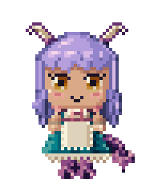
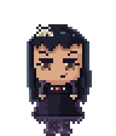
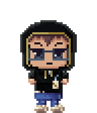
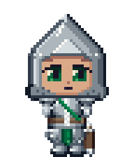

Pixmates — UI spike
Головний інтерфейс — сам персонаж. Звичайні вікна — лише там, де без них не обійтися. Три візуальні напрями, кожен на тих самих п’яти екранах. Відкрий, поклацай вкладки, перемкни світлу/темну тему — і обери один.








Піксельні шрифти, товсті піксельні рамки, палітра з персонажів — інтерфейс як частина гри.
Спокійний сучасний десктопний UI; піксель-арт — головний герой, пікселі лише в іконках і заголовках.
Теплий папір, м’які картки, бульбашки як панелі коміксу — затишний стіл, на якому живе персонаж.
Екрани в кожному напрямі: 1 бульбашка зі стрімінгом, слідом tool-виклику й чипами · 2 картка MCP-дозволу · 3 радіальне меню (ПКМ по персонажу) · 4 перший запуск (знайомство, галерея, провайдер, приватність) · 5 налаштування (6 розділів).
Параметри в адресі: #screen=mcp&theme=dark, &static — без анімації, &step=3, &sec=mcp.